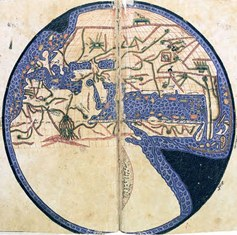
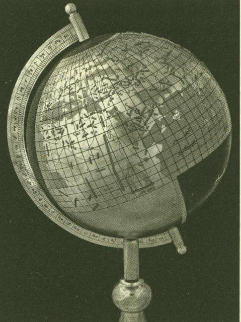

Bu haritanın çizimi Halife el-Me’mûn haritasının enlem ve boylam derecelerini içeren kitabın sağladığı değerlere dayanılarak yapılmıştır. Bu iki harita -günümüze ulaşanı her ne kadar ana nüshanın karakterini tam taşıyabilmekten uzak olsa bile- bize insanoğlunun yeryüzünün tanıtılmasını sağlamak hususundaki çabalarının 9. yüzyılın başlarında vardığı başarıyı yansıtabiliyor. Böylece, el-Me’mûn haritası bize kendisini gerek İslam dünyasında ve gerek batıda takip eden kartografik gelişmede çok büyük bir önem taşımaktan başka bu gelişmenin değerlendirilmesi bakımından çok önemli bir basamak sağlıyor. Yeryüzünün o zaman tanınan kısmının oldukça gelişmiş bir şeklinden başka bu haritanın taşıdığı kartografik yenilikler, mesela kürevî projeksiyon, kartografik ölçek ve dağların perspektif gösterilişi bizi bunların bugüne kadar alıştığımız ortaya çıkış hususundaki tarihlerini daha eski bir çağa çıkarmağa yöneltiyor. Daha önemlisi: Akdeniz’in Batlamyus’un Coğrafya’sında karşılaşılan 62 veya 63 derece uzunluğunun 52 dereceye indirilmesi, Afrika’nın güneyden, Asya’nın kuzeyden gemi ile dolaşılabilir şekli, Hint ve Atlas Okyanuslarının, Batlamyus’taki karalarla çevrilmiş kapalı deniz görünüşüne son verilmesi.

Yer küresi